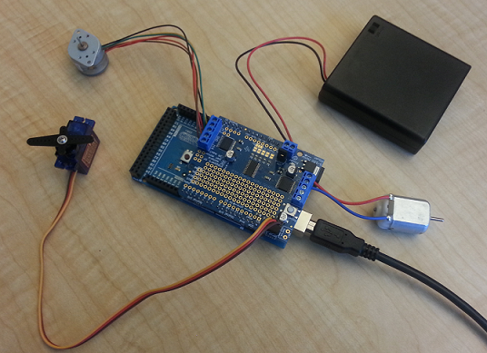

Control Motors Using Adafruit® Motor Shield V2
This example shows how to use the MATLAB® Support Package for Arduino® Hardware to control servo motors, DC motors and stepper motors using Adafruit motor shield v2.
Contents
Hardware setup
1. Attach Adafruit motor shield to your Arduino hardware.
2. Connect an FS5106B motor to port 1, labeled 'Servo 1' on the shield.
3. Connect a DC toy/hobby motor to port 1, labeled 'M1' on the shield.
4. Connect a six-wire Portescap stepper motor to port 1, labeled 'M1' and 'M2' on the shield. Connect the two middle wires on the stepper motor to the center of the port to ground them together. If you are using four-wire or five-wire stepper motor, check your hardware specs for appropriate connections of each wire.
5. Connect a battery pack that has three AA batteries to the DC jack, labeled with Power and remove the jumper on pins labeled Vin Jumper. This step is optional if your stepper motor does not require a high power supply.

Create shield object
By default, the Adafruit\MotorShieldV2 library is not included in the server code on the board. Create an arduino object and include the Adafruit\MotorShieldV2 library to the hardware.
a = arduino('com25', 'uno', 'Libraries', 'Adafruit\MotorShieldV2')
a =
arduino with properties:
Port: 'COM25'
Board: 'Uno'
AvailableAnalogPins: [0, 1, 2, 3, 4, 5]
AvailableDigitalPins: [2, 3, 4, 5, 6, 7, 8, 9, 10, 11, 12, 13]
Libraries: {'Adafruit/MotorShieldV2', 'I2C', 'Servo'}
Create an add-on shield object by specifying the required library name paramter:
shield = addon(a, 'Adafruit\MotorShieldV2')
shield =
motorshieldv2 with properties:
Pins: A4(SDA), A5(SCL)
I2CAddress: 96 (0x60)
PWMFrequency: 1600 (Hz)
The I2CAddress of a shield is set to 0x60 by default if not specified. Search for available I2C addresses on bus 0 to specify a different address.
addrs = scanI2CBus(a,0)
addrs =
'0x60'
'0x70'
Control servo motor on the shield
There are two servo motor ports available on each shield. To create a servo motor object at port 1.
s = servo(shield, 1)
s =
Servo with properties:
MotorNumber: 1
Pins: 10
MinPulseDuration: 5.44e-04 (s)
MaxPulseDuration: 2.40e-03 (s)
Set the position of the servo motor's shaft to its maximum position.
writePosition(s, 1);
See Servo Motor Control example to learn how to use a servo object.
Control DC motor on the shield
There are four DC motor ports available on each shield. Create a DC motor object at port 2.
dcm = dcmotor(shield, 2)
dcm =
dcmotorv2 with properties:
MotorNumber: 2 (M2)
Speed: 0.00
IsRunning: 0
First, change the motor speed to 0.2. The sign of the value indicates the direction of the motor rotation that also depends on the wiring of the motor.
dcm.Speed = 0.2;
Start the motor and change the speed while it is running. Stop the motor when you are done.
start(dcm); dcm.Speed = 0.3; pause(2); dcm.Speed = -0.2; pause(2); stop(dcm);
Control stepper motor on the shield
There are two stepper motor ports available on each shield. To create a stepper motor object at port 2 with 200 steps per revolution.
sm = stepper(shield, 2, 200)
sm =
stepper with properties:
MotorNumber: 2
StepsPerRevolution: 200
RPM: 0
StepType: Single ('Single', 'Double', 'Interleave', 'Microstep')
Set the motor's RPM, e.g revolutions per minute, to 10 and move or step the motor 200 steps in one direction and then another 200 steps in the reverse direction.
sm.RPM = 10; move(sm, 200); pause(2); move(sm, -200); release(sm);
Clean up
Once the connection is no longer needed, clear the associated object.
clear s dcm sm shield a